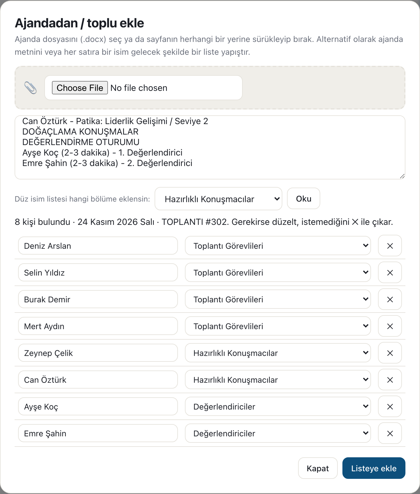
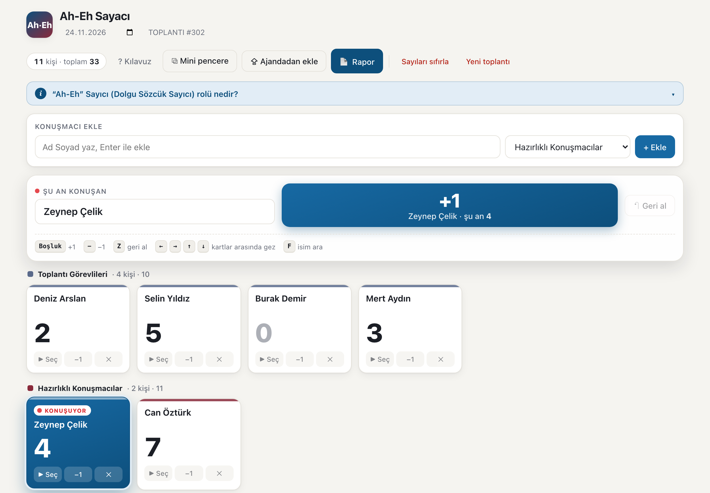
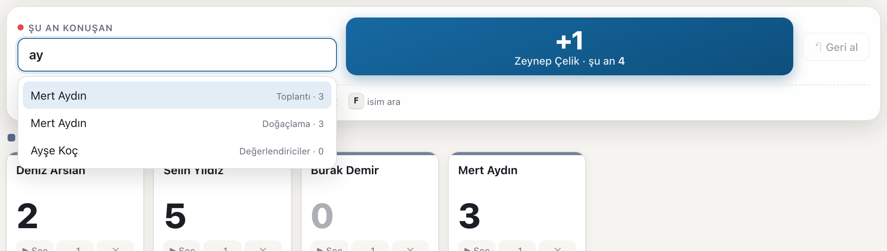
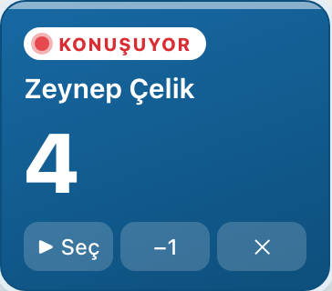
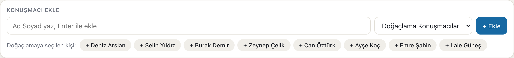
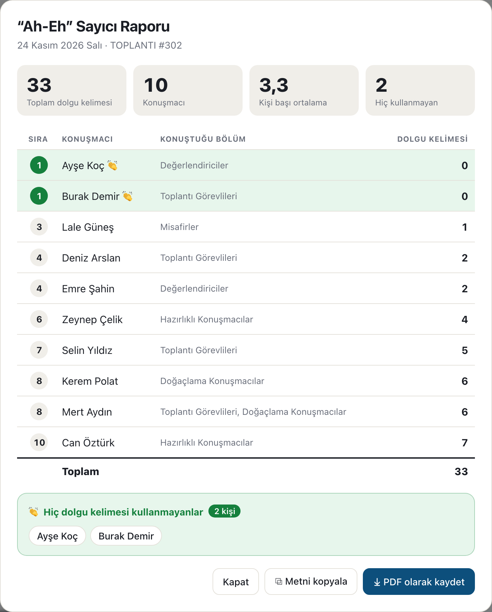

Ah-Eh Sayacı kullanım kılavuzu
“Ah-Eh” Sayıcı rolünü üstlendiğin toplantıda dolgu kelimelerini saymak ve sonunda raporu sunmak için adım adım rehber.
Ah-Eh Sayacı’nı aç →1. Rol ve araç
“Ah-Eh” Sayıcı, toplantı boyunca her konuşmacının dolgu kelimelerini (ah, eh, yani, şey, hani vb.) kaç kez kullandığını sayar. Değerlendirme oturumunda da bu sayıları kısaca paylaşır. Amaç kimseyi eleştirmek değil, konuşmacıların farkındalığını artırmak.
Ah-Eh Sayacı bu işi kolaylaştıran bir web sayfası:
- Kurulum ya da üyelik gerekmez. Sayfayı açman yeterli.
- Kulübün ajanda dosyasını (.docx) okuyup konuşmacı listesini kendisi çıkarır.
- Toplantı sırasında tek tuşla sayarsın. Gözün ekranda değil konuşmacıda kalır.
- Sonunda en az dolgu kelimesi kullanandan en çok kullanana sıralı bir rapor hazırlar.
2. Toplantıdan önce: listeyi hazırla
Toplantı başlamadan 5 dakika ayırman yeterli.
Önceki toplantıyı temizle
Araç, kaldığın yeri tarayıcında hatırlar. Bir önceki toplantıdan kalan isimler varsa sağ üstteki Yeni toplantı’ya tıkla. Yanlışlıkla silmeyi önlemek için düğme kırmızıya döner. Üç saniye içinde bir kez daha tıkladığında her şey silinir.
Ajandayı yükle
- ⇪ Ajandadan ekle’ye tıkla ve kulübün gönderdiği ajanda dosyasını (.docx) seç. Dosyayı sayfanın üzerine sürükleyip bırakman da yeterli.
- Araç ajandadaki görevlileri, hazırlıklı konuşmacıları ve değerlendiricileri bulup bir önizleme gösterir. “Ah-Eh” Sayıcı sen olduğun için senin adın listeye eklenmez. Toplantı tarihi ve numarası da ajandadan gelir.
- Listeyi kontrol et. Yanlış yazılmış bir ismi kutuda düzeltebilir, bölümünü değiştirebilir, gereksiz bir satırı ✕ ile çıkarabilirsin.
- Listeye ekle’ye tıkla.

Eksikleri elle ekle
Misafirler ve son anda değişen görevliler genellikle ajandada olmaz. Bunları Konuşmacı ekle bölümünden eklersin. Adı yaz, sağdaki listeden bölümü seç (örneğin Misafirler) ve Enter’a bas.
Doğaçlama konuşmacılar ajandada yer almaz, çünkü toplantı sırasında seçilirler. Onları da toplantı sırasında eklersin (bkz. Doğaçlama konuşmacılar).
Mini pencereyi hazırla (isteğe bağlı)
Toplantı tam ekrandayken sayaca geçmek zor olabilir. ⧉ Mini pencere, Zoom ya da Meet penceresinin üstünde duran küçük bir sayaç açar. İçinde konuşmacı seçimi, büyük +1 düğmesi, Geri al ve hızlı isim ekleme var. Klavye kısayolları mini pencerede de çalışır.
3. Toplantı sırasında: say
Temel döngü çok basit: konuşanı seç → her dolgu kelimesinde Boşluk’a bas.

Konuşanı seç
Konuşmacı kürsüye çıkınca onu “Şu an konuşan” olarak seç. Üç yolu var:
- Arayarak: F’ye bas ya da “Şu an konuşan” kutusuna tıkla, isminin birkaç harfini yaz, ↓ ↑ ile seç, Enter’a bas. Türkçe karakter yazmana gerek yok: omer yazınca Ömer de bulunur.
- Ok tuşlarıyla: ← → önceki/sonraki kişiye, ↑ ↓ üstteki/alttaki karta geçer. Hazırlıklı konuşmacılar ve değerlendiriciler kendi bölümlerinde ajanda sırasıyla durduğu için o bölümlerde → genellikle bir sonraki konuşmacıyı getirir.
- Kartla: kişinin kartındaki ▶ Seç’e tıkla.

Say
Seçili kişi her dolgu kelimesi kullandığında Boşluk’a bas. + ve Enter da aynı işi yapar. Fareyle saymak istersen büyük +1 düğmesine tıkla. Düğmenin altında kimin sayıldığı ve o anki toplamı görünür.

Yanlış saydıysan
- Z ya da ↶ Geri al: son yaptığın sayımı geri alır, kim için yaptıysan. Arka arkaya basarak daha geriye gidebilirsin.
- −: seçili kişinin sayısını bir azaltır. Başka birini düzeltmek için o kişinin kartındaki −1’e tıkla.
- Kartta ✕ kişiyi listeden kaldırır. Sayısı 0’dan büyükse onay için bir kez daha tıklaman gerekir.
Doğaçlama konuşmacılar
Doğaçlama Ustası birini seçtiğinde Konuşmacı ekle bölümünde bölüm olarak Doğaçlama Konuşmacılar’ı seç. Listede zaten olan herkes altta düğme olarak çıkar. İsmine tıklaman yeterli. Listede olmayan biriyse adını yazıp Enter’a bas.

Aynı kişi hem görevli hem doğaçlama konuşmacı olabilir. Araç bunları ayrı kart olarak tutar, raporda tek satırda toplar.
- Ah-Eh Sayacı aktif pencere değil. Tuşlar yalnızca o an aktif olan pencereye gider. Toplantı sırasında Zoom’a ya da başka bir pencereye tıkladıysan tuşlar oraya gidiyordur. Ah-Eh Sayacı sayfasında (ya da mini pencerede) boş bir yere bir kez tıkla, sonra yeniden dene.
- İmleç bir yazı kutusunun içinde. Yazı yazarken Boşluk sayım yapmaz. Esc’ye bas ya da sayfada boş bir yere tıkla.
4. Değerlendirme oturumu: raporu sun
Genel Değerlendirici sana söz verdiğinde sağ üstteki 📄 Rapor’a tıkla.

Raporda şunlar var:
- Toplam dolgu kelimesi, konuşmacı sayısı, kişi başı ortalama ve hiç dolgu kelimesi kullanmayanların sayısı.
- Her kişi için konuştuğu bölüm(ler) ve sayısı. Aynı sayıya sahip kişiler aynı sırayı paylaşır.
- Hiç dolgu kelimesi kullanmayanlar için ayrı bir tebrik kutusu.
Raporu paylaşmanın iki yolu var:
- ⧉ Metni kopyala: raporu düz metin olarak kopyalar. Toplantının sohbetine ya da kulübün WhatsApp grubuna yapıştırabilirsin.
- ⤓ PDF olarak kaydet: tarayıcının yazdırma penceresini açar. Hedef olarak “PDF olarak kaydet”i seç. Dosya adı tarihle birlikte önerilir.
Sonraki toplantı için
- Sayıları sıfırla: kişiler kalır, bütün sayılar 0 olur. Aynı listeyle yeniden başlamak için.
- Yeni toplantı: kişiler, sayılar, tarih ve toplantı adı silinir.
İkisi de yanlışlıkla tıklamaya karşı ikinci bir tıklama ister.
5. Klavye kısayolları
Kısayollar ana sayfada ve mini pencerede, hangisi aktifse orada çalışır. Bir yazı kutusunun içindeyken devre dışıdır. Çalışmıyorsa şu nota bak.
| Tuş | Ne yapar |
|---|---|
| Boşluk + Enter | Seçili kişiye +1 |
| − | Seçili kişiden −1 |
| Z ⌫ | Son sayımı geri al |
| → ← | Sonraki / önceki kişiyi seç |
| ↓ ↑ | Alttaki / üstteki kartı seç (mini pencerede sonraki / önceki kişi) |
| F / | İsim aramaya geç |
| Esc | Aramadan çık |
6. Sık sorulan sorular
Sayfayı yanlışlıkla kapatırsam sayılar kaybolur mu?
Hayır. Her değişiklik anında tarayıcına kaydedilir. Sayfayı yeniden açtığında kaldığın yerden devam edersin.
Veriler nerede saklanıyor? Başkası görebilir mi?
Yalnızca kendi tarayıcında. Hiçbir sunucuya gönderilmez, başka biri göremez. Bu yüzden listeyi bir bilgisayarda hazırlayıp başka bir bilgisayarda ya da başka bir tarayıcıda açarsan orada boş görünür. Gizli (private) pencerede çalışırsan pencereyi kapattığında her şey silinir.
İnternet bağlantım kesilirse ne olur?
Sayfa açıldıktan sonra araç internete ihtiyaç duymaz. Bağlantın gitse de saymaya ve rapor almaya devam edebilirsin.
Ajandadan bazı isimler gelmedi ya da yanlış bölüme düştü.
Ajanda okuyucusu kulübün standart ajanda şablonuna göre çalışır. Şablon farklıysa bazı isimler eksik kalabilir. Önizlemede bölümleri düzeltebilir, eksikleri sonradan Konuşmacı ekle ile ekleyebilirsin.
Mini pencere açılmıyor.
Mini pencere yalnızca Chrome ve Edge’de çalışır. Bu tarayıcılardan birini kullanmıyorsan aracı tarayıcı penceresinde, toplantı penceresinin yanında kullan.
Hangi kelimeleri dolgu kelimesi saymalıyım?
Anlama katkısı olmayan, düşünürken boşluğu doldurmak için söylenen ses ve kelimeler: ıı, ee, şey, yani, hani, işte, aslında, falan. Bir kelime anlamlı kullanıldıysa (örneğin “yani” bir açıklamaya geçiş için) sayma. Gereksiz tekrarlanan kelimeleri ve yarım bırakılıp yeniden başlanan cümleleri de saymak isteyebilirsin. Toplantının başında rolünü tanıtırken neleri sayacağını söylemen iyi olur.